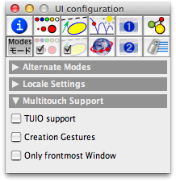
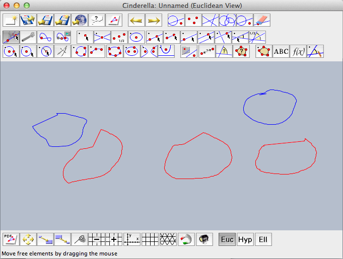

マルチタッチサポート
序
マウスは、およそ30年間、主なグラフィカル・ユーザ・インタフェースのための入力デバイスでした。物理的なデバイスの動きと画面上の点が１対1に対応するということにシンデレラでの双方向性は依存していました。一方で、マウスは人間の手の動きを平面的にしてしまいます。われわれはその制限に慣れてきましたが、実生活では手と何本かの指での動作を好みます。
技術は進歩し、最新の多機能電話やタブレットコンピュータで見られるように、マルチタッチインターフェースが大きな役割をしています。ノートパソコンのタッチバッドでさえ同時にいくつかの指を認識できます。そして、タッチスクリーンも手ごろなものとなり、最新のオペレーティングシステムによってサポートされています。
幾何学ツールにとって、マルチタッチはよりよいインターフェースです。数学的に言うと、それは「変換だけ」から「複数の変化」に変わります。シンデレラには自由曲線を描くモードがありません。その代わりとして、「線分を加える」か「1点を通る直線」を使っています。もし、あなたが入力デバイスとしてマウスを使っているならば、この２つのツールだけがユーザーと図面との間のインターフェースです。その状況はマルチタッチ環境でまったく変わったものになります。２本の指の動きによって拡大や縮小をすることがすでに行われています。そのような方法で直線と相互作用をすることが可能です。たとえば、回転と平行移動が同時にできます。
プログラマの立場からすると、マルチタッチは若干複雑なものとなります。マウスでは常にカーソルが指し示す位置があり、ボタンは「押すードラッグするー離すという」一連の操作によっています。マルチタッチでは状況が異なります。位置は複数あり（触っていなければ指し示している位置はない）、「タッチするー動かすー離す」という動きも重複するかもしれません。ユーザーとしては気にする必要はありませんが、CindyScript でプログラムを角のであればこれは重要です。詳しくは [KD10] を見てください。
シンデレラでマルチタッチを使う
（訳者注：シンデレラでのマルチタッチサポートはまだ研究段階であり、訳者もその環境が用意できないことから、実際に動作を確かめているわけではありません。したがって、以下の翻訳には誤りがあるかもしれません。できるだけ英語版の方を参照してください）
いまのところ、シンデレラでは標準的な TUIO プロトコル [KBBC05] を通してマルチタッチイベントをサポートしています。 http://www.tuio.org
 |
| インスペクタのTUIO設定 |
TUIO を有効にするには、インスペクタの「モード」を使います。マルチタッチサポートのTUIOチェックボックスをチェックして、標準的なポート3333で働くことを「動かすモード」にして動作を確かめてください。 TUIO サポートがチェックされている間、WindowsまたはMac OSX上で標準的なTUIOドライバが使われていれば、マウスによる操作は重複を避けるために無視されます。シンデレラのその他のモードではまだ TUIO イベントをサポートしていません。もし、「Creation Gestures」がチェックされていれば、1本か２本の指でパッドに触れることで点と直線を作り出せます。これによって、余分な点や線ができるため、このオプションはデフォルトではチェックが外されています。まだ実験段階だと思ってください。
「Only frontmost window」オプションは、あなたがマルチタッチのデバイスを使うかどうかによってチェックをつけるかまたは外さなければなりません。もし、デバイスがスクリーンのコンテンツを表示し、スクリーンへのタッチが自動的にシンデレラのウィンドウにマップされるようならチェックをはずさなければなりません。デバイスが、ラップトップコンピュータのタッチバッドやスマートフォンのTUIOアプリのように、スクリーンを持たないか、シンデレラのウインドウを表示しないならば、このオプションをチェックするのがよいでしょう。その場合、タッチ面上のすべてのイベントは、シンデレラで最前面にある表示領域にマップされます。
CindyScript を用いたマルチタッチプログラミング
幾何学ソフトウェアのためのマルチタッチ入力はまだ研究段階です。そして、「動かすモード」以外には標準的なユーザーインターフェースがまだありません。私たちがシンデレラの将来のアップデートで他のモードに対応するために、 CindyScript でマルチタッチイベントにアクセスできるようにすることにしました。
インスペクタでTUIOサポートを有効にすれば、 Mouse Down, Mouse Up , Mouse Drag スロットで マウスの代わりにTUIOイベントが使えるようになります。
mouse function はタッチイベントを検出して報告します。 mouse() 関数はすべてのタッチイベントのうち、マルチタッチだけを検出します。このことは、連続したマウスイベントが、同じ動作に属しているということにはならないことを意味しています。これはプログラマにとって悪夢です。異なるタッチをどのようにして正しい動作に割り当てることができるのでしょうか。便宜を図るために CindyScript に次のような関数を用意しました。タッチ局所変数を定義する: mtlocal(<var1>,<var2>,...)
説明：mtlocal はタッチシーケンスのための局所変数を定義します。この関数はMouse Down スロットだけで有効です。変数がタッチ局所変数として定義されると、すべてのタッチシーケンスに対して唯一のインスタンスが作られます。
もし、 Mouse Drag スロットか Mouse Up スロットでその変数を使うならば、タッチするー動かすー離す、という流れが割り当てられます。
例：
mtlocal 関数を使う簡単な例です。次のコードを Draw, Mouse Down, Mouse Up , Mouse Drag スロットに書くと、マウスで多角形（曲線）を描くことができます。マウスボタンが押されている間、多角形は赤で描かれ、いったんマウスボタンを離すと、新しい多角形は青で描かれるようになってリストに追加されます。// In Draw: forall(polygons,drawpoly(#)); // In Mouse Down: polygon=[mouse()]; // In Mouse Drag: polygon=polygon++[mouse()]; drawpoly(polygon,color->red(1)); // In Mouse Up: polygons=polygons++[polygon];
このコードでは、まず Mouse Down スロットで 変数 polygon が作られます。それから Mouse Drag 関数で点が追加され、最後に Mouse Up スロットで変数の内容（リスト）ができあがります。
同じコードをマルチタッチ環境で動作させると、 (大域)変数
polygon がすべてのタッチに対して使われます。また、どれかの指が離されると新しい polygon がリストに追加されますが、ドラッグイベントは点の追加をし続けます。このコードはマルチタッチ互換にならずに失敗します。mtlocal を使って改善してみます。// In Draw: forall(polygons,drawpoly(#)); // In Mouse Down: mtlocal(polygon); // make sure every touch gets its own polygon polygon=[mouse()]; // In Mouse Drag: polygon=polygon++[mouse()]; drawpoly(polygon,color->red(1)); // In Mouse Up: polygons=polygons++[polygon];
今度は、新しい polygon はそれぞれのタッチのために作られ、DragとUpイベントはそれぞれの動作に対応して正しい polygon 変数を作るでしょう。
 |
| マルチタッチで３つの多角形（曲線）を描く |
このコードを試してみると、赤い多角形の描画がすべてのイベントにおける画面の自動消去のために予想通りにいかないことがわかります。そこで、Drawイベントだけで新しい polygon のリストを保持してそれを描画するように改善することができます。次のコードを見てください。
// In Draw: forall(polygons,drawpoly(#)); forall(newpolygons,drawpoly(#,color->red(1))); // In Mouse Down: mtlocal(polygon); polygon=[mouse()]; newpolygons=newpolygons++[polygon]; // In Mouse Up: newpolygons=newpolygons--[polygon]; polygons=polygons++[polygon]; // In Mouse Drag: newpolygons=newpolygons--[polygon]; polygon=polygon++[mouse()]; newpolygons=newpolygons++[polygon];
これに対して、 レイヤーと自動消去フラグ を使えば、すべての新しい polygon 変数を保存しなくても同じ効果を得ることができます。
Page last modified on Tuesday 28 of February, 2012 [11:27:01 UTC].
The original document is available at
http://doc.cinderella.de/tiki-index.php?page=Multitouch%20SupportJ